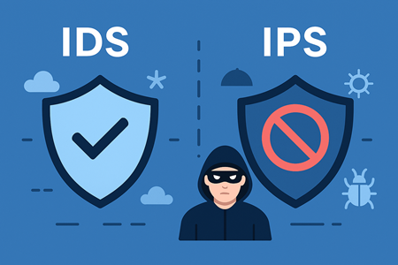
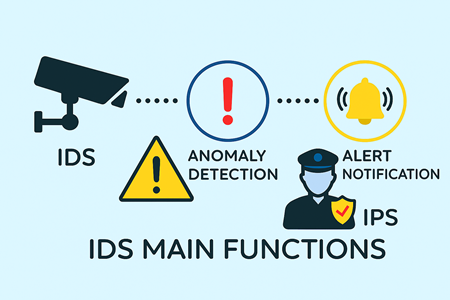
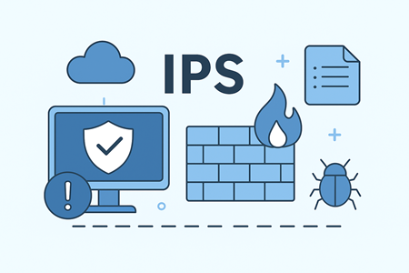
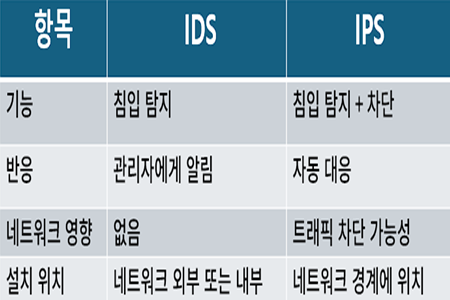

IDS/IPS란?

IDS(침입 탐지 시스템: Intrusion Detection System)는 네트워크와 시스템에서 비정상적인 활동을 탐지해 관리자에게 알림을 제공하는 보안 기술입니다.
IDS는 방화벽을 우회한 공격을 식별하는 '두 번째 방어선' 역할을 합니다.
IDS는 네트워크 보안의 필수 요소로서 알려진 공격과 새로운 위협을 탐지하는 데 중요한 역할을 하며,
방화벽, IPS, SIEM 등과 함께 다층 보안 전략을 구성하는 핵심 보안 기술입니다.
IPS(침입 방지 시스템: Intrusion Prevention System)는 네트워크와 시스템에서 비정상적인 활동을 탐지할 뿐 아니라, 실시간으로 차단까지 수행하는 능동적 보안 기술입니다.
IDS가 '알림'에 치중한다면 IPS는 '차단'까지 담당하는 적극적 방어 장치입니다.
IPS는 탐지와 차단을 동시에 수행하는 능동적 보안 장치로서, 현대 사이버 위협 환경에서 기업과 개인 모두에게 필수적인 방어 기술입니다.
IDS와 함께 사용하면 '탐지-차단-분석'이 유기적으로 연결된 강력한 보안 체계를 구축할 수 있습니다.
IDS(침입 탐지 시스템)

1. 기능: IDS는 네트워크 트래픽이나 호스트 활동을 모니터링하여 악의적 행위, 의심스러운 접근, 보안정책 위반을 탐지하는 역할을 합니다.
네트워크 및 시스템 활동을 지속 관찰하여 모니터링을 하며, 비정상 패턴 및 공격 시그니처를 식별합니다.
그리고 관리자에게 경고나 알림을 보내고, 이벤트 기록 후에 추후 분석이 가능합니다.
2. 탐지 방식
(1) 시그니처 방식: 알려진 공격 패턴을 데이터베이스와 비교해 탐지합니다. 정확성이 높지만 신규 공격(제로 데이)에는 취약합니다.
(2) 이상 징후 기반 탐지: 정상 활동 기준선을 설정하고 벗어나는 행위를 탐지합니다. 신규 공격은 탐지 가능하지만 오탐률이 높습니다.
(3) 하이브리드 방식: 두 방법을 결합해 장점을 극대화한 것으로 최근 가장 많이 활용되고 있습니다.
3. 설치 위치에 따른 방식
(1) 네트워크 기반(NIDS): 네트워크 구간의 트래픽을 모니터링하여 광범위한 탐지가 가능하지만 암호화된 트래픽 분석은 어렵습니다.
(2) 호스트 기반(HIDS): 개별 서버와 PC에 설치하여 내부 활동을 감시합니다. 세밀한 분석이 가능하지만 리소스 소모가 큽니다.
IPS(침입 방지 시스템)

1. 기능: IPS는 네트워크 트래픽을 모니터링하여 악성 코드, 해킹 시도, DDoS 공격, 취약점 스캐닝 등을 실시간으로 탐지하고 차단하는 보안 기술입니다.
정상/비정상 패턴을 구분하여 이상 행위를 탐지하여 공격을 즉시 차단합니다. 그리고 공격 유형, 발생 시간, 차단 결과 기록 등 로그 및 리포트를 제공합니다.
2. 탐지 방식
(1) 시그니처 기반 탐지: 알려진 공격 패턴을 데이터베이스와 비교해 탐지합니다. 빠르고 정확하지만 신규 공격에는 취약합니다.
(2) 이상 징후 기반 탐지: 정상 활동 기준을 설정하고 벗어하는 행위를 탐지합니다. 신규 공격은 탐지가 가능하지만 오탐률이 높습니다.
(3) 정책 기반 탐지: 보안 정책 위반 행위를 차단하고 맞춤화가 가능합니다. 하지만 초기 설정이 복잡합니다.
IPS는 SOC의 업무 부담을 줄이고 복잡한 위협 대응에 집중 가능하여 보안 운영의 효율화를 기할 수 있습니다. 또한 최신 트렌드는 AI 머신 러닝 기반 이상 탐지, 평판 기반 탐지,
프로토콜 분석 등 기술이 고도화하고 있습니다.
IDS IPS 비교

IDS는 '탐지와 알림'에 집중하는 수동적 보안 기술이고, IPS는 '탐지와 차단'을 동시에 수행하는 능동적 보안 기술입니다. 두 기술은 상호 보완적으로 사용되어 네트워크 보안의 다층 방어를 강화합니다.
1. 운영 방식 차이
IDS는 공격을 발견하면 관리자에게 경고만 전달하고, IPS는 공격을 탐지하면 즉시 차단, 격리, 연결 종료 등의 조치를 수행합니다.
2. 배치 위치
IDS는 네트워크 트래픽을 미러링해 관찰자 역할을 수행하여 트래픽 흐름에 직접 개입하지 않습니다. IPS는 네트워크 경로에 직접 배치되어 실시간으로 트래픽을 검사, 차단합니다. 보통 방화벽 뒤에 위치합니다.
3. 장단점 및 한계
IDS는 오탐이 적고 네트워크 성능에 영향이 적습니다. 그러나 IPS는 공격을 즉시 막아 피해를 최소화합니다. 그래서 오탐 시 정상 트래픽까지 차단할 위험이 존재합니다.
IDS는 '알려주는 감시자', IPS는 '막아내는 보안 요원'으로 비유할 수 있습니다. 두 보안 기술을 함께 사용하면 '탐지-분석-차단'의 완전한 보안 체계 구축이 가능해 위협 탐지와 실시간 방어를 동시헤 확보할 수 있습니다.